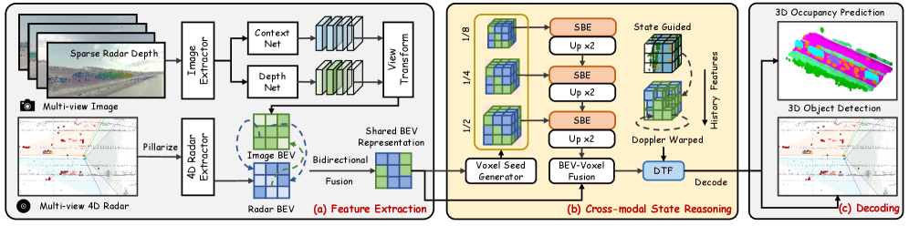

Figure 3: Overview of the proposed GatedLinear framework. The input sequence is processed by three complementary linear forecasting bases. A Tri-Factorized Fusion Gate uses horizon...
Figure 1: CoCoT-EEG. A. Raw EEG signals are processed through a bank of 1D convolutions with varying kernel sizes ( k = 3 k=3 to 121 121 ). The resulting multiscale feature maps ar...
Figure 1: COBS approaches dense accuracy at a fraction of the KV cache read traffic. Accuracy on 32k RULER versus per-decode-step KV cache read traffic (KiB per layer, log scale; s...
Figure 1: HemoPIC overview. Given measured tracer dynamics, HemoPIC estimates regional blood inflow ( f in r f^{r}_{\mathrm{in}} ) and outflow ( f out r f^{r}_{\mathrm{out}} ) with...
HemoPIC 通过 tracer mass conservation 和 lumped parameter hemodynamic model 解释 perfusion time series，求解 constrained inverse problem，联合估计数字孪生参数与 latent states，并直接生成临床可用 perfusion maps。
Figure 3: Overview of the proposed GatedLinear framework. The input sequence is processed by three complementary linear forecasting bases. A Tri-Factorized Fusion Gate uses horizon...
Figure 1: CoCoT-EEG. A. Raw EEG signals are processed through a bank of 1D convolutions with varying kernel sizes ( k = 3 k=3 to 121 121 ). The resulting multiscale feature maps ar...
Figure 1: Illustration comparing the fixations of the human visual system (left; Yarbus et al. [ 1967 ] ) and an ANN (right; our method). Areas outside the fixations are blurred to...
预期计算/显存影响取决于 state 分辨率，若用低维局部 state 替代全帧 token 可降低长视频融合成本；风险是自动驾驶 BEV/occupancy 先验迁移到托卡马克可见光时物理含义不成立。最小验证实验是构造 8-32 个可见光局部 state token，并由诊断时序 query 更新，比较 late fusion 与 state propagation。
核心问题
时序如何选择图像局部证据，并抑制无关视觉信息？
对当前主题的关键意义在于：最小实现是复用现有可见光 encoder，只新增 state tokens 和 gated update，报告缺失图像/缺失诊断时的退化曲线。
方法与关键创新

Figure 2: Overall framework of 4DR360 ∘ . The pipeline first extracts multi-view image BEV features and 4D radar BEV features, fuses them into a shared BEV representation, reasons ...
【P3】原始应用是医学灌注影像；可迁移模块是 constrained inverse problem、physics-informed latent states 和 forward/counterfactual simulation；对应待解决问题是破裂预测模型需要物理可解释性和跨装置泛化，而不是只输出风险分数。
研究背景
由原简报的核心问题、选取理由和相关性整理，不替代原文背景综述。
预期计算/显存影响主要来自求解或近似物理约束逆问题，若 latent state 维度较低，在线推理可控；风险是物理约束定义错误会压制数据中真实但未建模的前兆。最小验证实验是在融合模型中引入少量可解释 latent state，并用弱物理约束或守恒/平滑约束训练。
核心问题
如何让可见光和诊断时序共同估计可解释的破裂前状态，并支持反事实分析？
对当前主题的关键意义在于：最小实现是在现有破裂模型中新增一个低维 state head，预测可解释 proxy，如辐射上升、边界活动或剖面异常，并检查这些 proxy 是否提升跨装置泛化。
方法与关键创新
Figure 1: HemoPIC overview. Given measured tracer dynamics, HemoPIC estimates regional blood inflow ( f in r f^{r}_{\mathrm{in}} ) and outflow ( f out r f^{r}_{\mathrm{out}} ) with...
借鉴 HemoPIC 的 digital twin 思路，把观测序列解释为 latent state 驱动的 forward process，同时保留对最终预警目标的监督。
阅读时需要把方法设计与主要结果一起看：原文显示其能重建动态、生成一致 summary maps，并支持反事实干预。
实验结果
原文显示其能重建动态、生成一致 summary maps，并支持反事实干预。
局限性
聚变系统的可解释 state 需要由物理专家约束，不能凭视觉 embedding 自行命名。
总结
适合作为 P3 解释性损失和中间变量设计参考。
研究相关性与启发
最小实现是在现有破裂模型中新增一个低维 state head，预测可解释 proxy，如辐射上升、边界活动或剖面异常，并检查这些 proxy 是否提升跨装置泛化。
在研课题启发：P4 跨域问题
01
在研课题启发：P4 跨域问题
GatedLinear：跨采样率和跨装置动态路由是否稳定
GatedLinear: Adaptive Routing of Complementary Linear Bases for Time Series Forecasting
Figure 3: Overview of the proposed GatedLinear framework. The input sequence is processed by three complementary linear forecasting bases. A Tri-Factorized Fusion Gate uses horizon...
预期计算/显存影响取决于物理 state 维度和约束求解方式，低维 state 有利于跨域部署；风险是错误物理约束会把目标域真实差异压掉。最小验证实验是比较纯视觉/时序 embedding、可解释 state head、物理约束 state head 三种方法在跨装置测试中的泛化差距。
核心问题
跨域问题中，哪些中间变量应被设计成域不变，哪些变量应允许随装置自适应？
对当前主题的关键意义在于：最小实现是为跨装置破裂模型新增 shared state + device adapter 结构，并报告源装置、目标装置、少量目标标注微调三种设置。
方法与关键创新
Figure 1: HemoPIC overview. Given measured tracer dynamics, HemoPIC estimates regional blood inflow ( f in r f^{r}_{\mathrm{in}} ) and outflow ( f out r f^{r}_{\mathrm{out}} ) with...
把可解释 latent state 放在任务输出之前，让模型先估计可迁移状态，再由少量装置特定校准参数映射到最终风险。
阅读时需要把方法设计与主要结果一起看：原文显示数字孪生可支持 forward simulation 和反事实干预；迁移到聚变时应重点验证 state 是否稳定。
实验结果
原文显示数字孪生可支持 forward simulation 和反事实干预；迁移到聚变时应重点验证 state 是否稳定。
局限性
需要物理专家定义可迁移状态，否则会变成命名过的黑盒 embedding。
总结
P4 的重点是把跨域泛化从特征对齐问题改写成状态变量和校准参数分解问题。
研究相关性与启发
最小实现是为跨装置破裂模型新增 shared state + device adapter 结构，并报告源装置、目标装置、少量目标标注微调三种设置。
在研课题启发：P5 通用多模态融合
01
在研课题启发：P5 通用多模态融合
4DR360：不限任务的传感器-图像状态融合模板
4DR360: State Reasoning for Joint 3D Detection and Occupancy Prediction in 4D Radar-Camera Full-Scene Perception
2026-07-10recommend
【P5】原始应用是自动驾驶雷达-相机检测和占用预测；可迁移模块是 persistent state、跨模态状态更新和 temporal fusion；对应待解决问题是时序和图像融合不应只做 late fusion，而应让时序信号持续更新视觉状态。
【P5】原始应用是自动驾驶雷达-相机检测和占用预测；可迁移模块是 persistent state、跨模态状态更新和 temporal fusion；对应待解决问题是时序和图像融合不应只做 late fusion，而应让时序信号持续更新视觉状态。
研究背景
由原简报的核心问题、选取理由和相关性整理，不替代原文背景综述。
预期计算/显存影响可通过控制 state token 数量保持可控，比全帧图像 token 与长时序全量 cross-attention 更省；风险是状态定义过粗会丢掉局部证据。最小验证实验是在任意图像+时序任务中固定 8/16/32 个 state token，比较 late fusion、双塔 cross-attention 和 persistent state fusion。
核心问题
多模态融合应该在什么时候发生：输入层、每个时间步、状态层，还是最终分类头？
对当前主题的关键意义在于：最小实现是给现有时序-图像模型加一个共享 state memory，检查其在缺失图像、缺失时序和跨域测试下是否比 late fusion 稳定。
方法与关键创新
Figure 2: Overall framework of 4DR360 ∘ . The pipeline first extracts multi-view image BEV features and 4D radar BEV features, fuses them into a shared BEV representation, reasons ...
Figure 1: Illustration comparing the fixations of the human visual system (left; Yarbus et al. [ 1967 ] ) and an ANN (right; our method). Areas outside the fixations are blurred to...
如何把稀疏传感器和 dense image 的融合结果变成可跨时间传播的中间状态，而不是一次性分类特征？
对当前主题的关键意义在于：最小实验是把可见光帧编码成局部视觉 state，把 ECE/磁探针/辐射诊断作为 temporal guidance，比较 late fusion、cross-attention fusion 和 persistent state fusion 在提前量、跨装置泛化、缺失模态和解释热区稳定性上的表现。
方法与关键创新
Figure 2: Overall framework of 4DR360 ∘ . The pipeline first extracts multi-view image BEV features and 4D radar BEV features, fuses them into a shared BEV representation, reasons ...
4DR360 提出 cross-modal state reasoning，将 semantic occupancy 作为 persistent scene state；State-guided BEV Enhancement 加强帧内 BEV 表示，Doppler-guided Temporal Fusion 保留更长时间范围的状态证据，并统一检测与占用预测评估。
![Figure 1: CoCoT-EEG. A. Raw EEG signals are processed through a bank of 1D convolutions with varying kernel sizes ( k = 3 k=3 to 121 121 ). The resulting multiscale feature maps are patchified into temporal tokens via L2 pooling, followed by the addition of a Fourier positional encoding. B. Self-attention is applied to the tokens to produce EEG embeddings ( z z ). A residual MLP head with two GLU blocks is used for the downstream classification or regression. C. For pretraining, a MoCo-style contrastive learning framework He2019-jw is employed, where query x q u e r y x^{query} and key x k e y x^{key} samples are generated via EEG augmentations. The encoder and momentum encoder produce embeddings ( z q z^{q} and z + k z^{k}_{+} ), which are trained with InfoNCE van-den-Oord2018-nh against a queue of negative samples z i k z^{k}_{i} . GLU: gated linear unit; MH: multi-head, MoCo: momentum contrast; N: number of transformer blocks; PE: positional encoding.](../assets/figures/f9bc6584bfd23c1d.png)
![Figure 1: COBS approaches dense accuracy at a fraction of the KV cache read traffic. Accuracy on 32k RULER versus per-decode-step KV cache read traffic (KiB per layer, log scale; see Table ˜ 3 ). The plotted FP4 COBS configurations lie on the Pareto frontier (dashed); the highlighted star is COBS (adaptive s ≈ 85 s{\approx}85 , r = 4 r{=}4 , FP4), which recovers most of the gap between dense and NSA MLP at 1.21 × 1.21\times NSA MLP’s KV cache read traffic. NSA MLP and NSA Quest are dominated; NSA mean-pool anchors the low-traffic end of the frontier, and OSA buys its accuracy by re-reading all keys.](../assets/figures/f2728c27685b4a74.png)